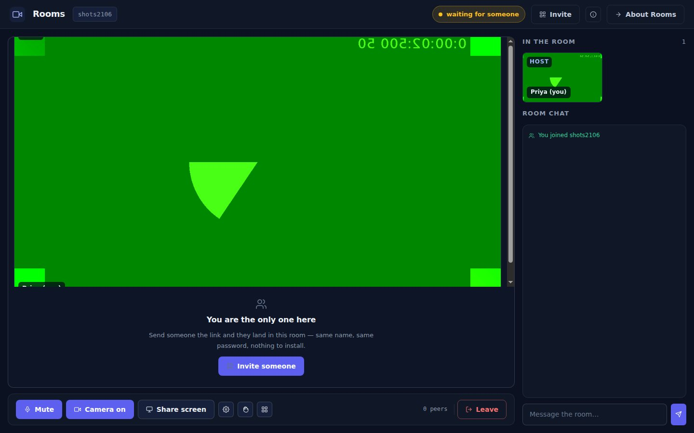
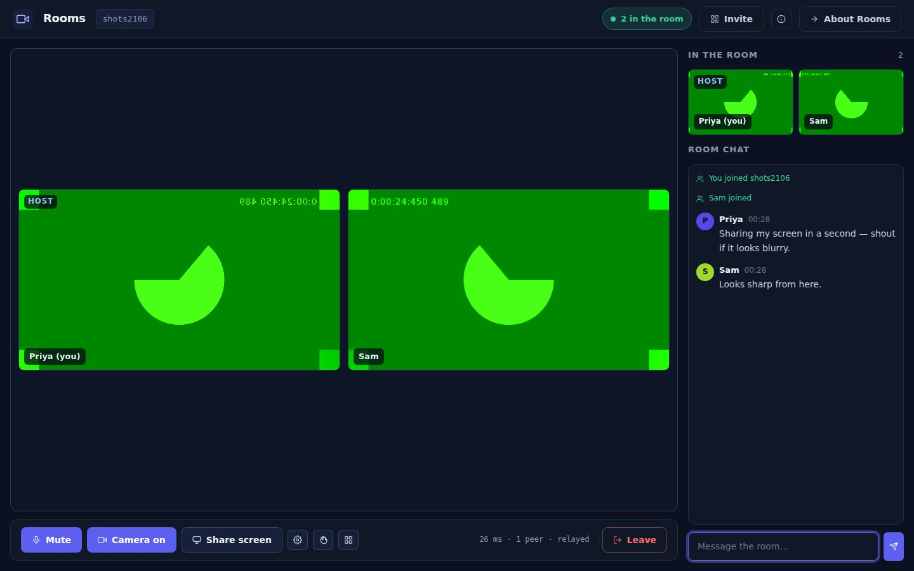
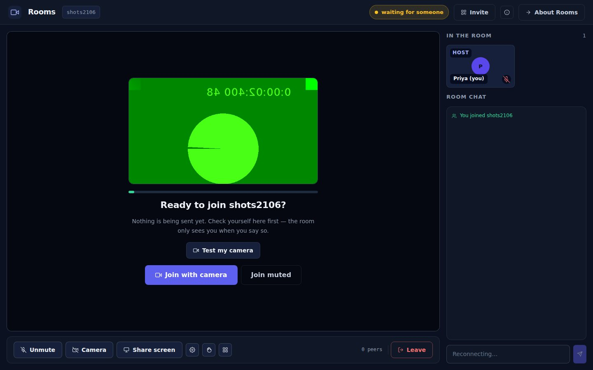
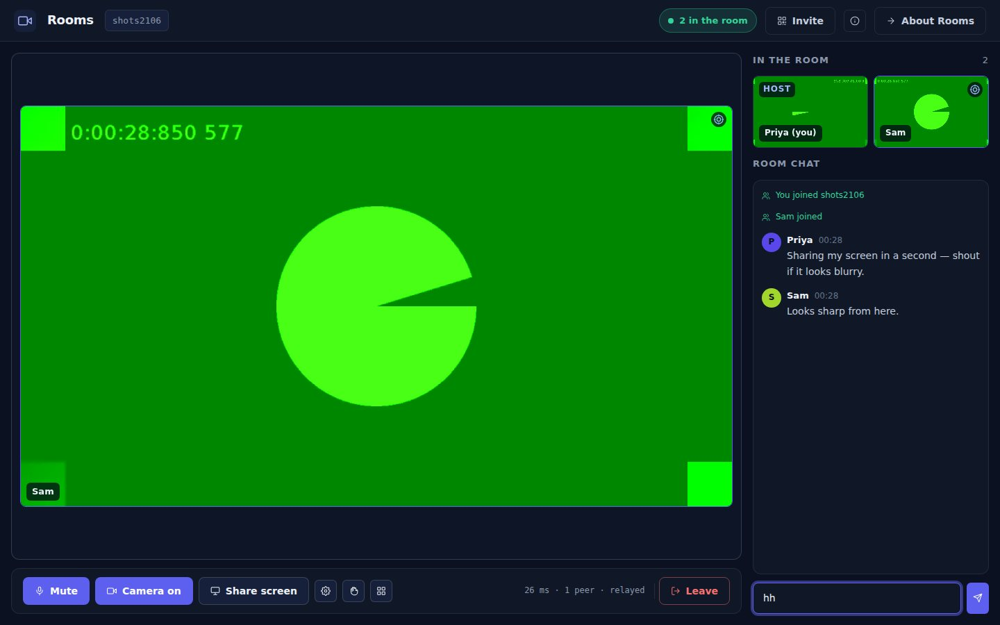
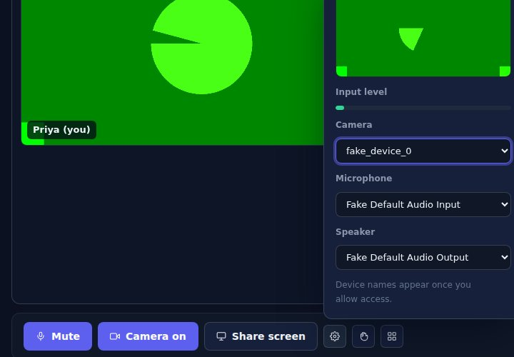
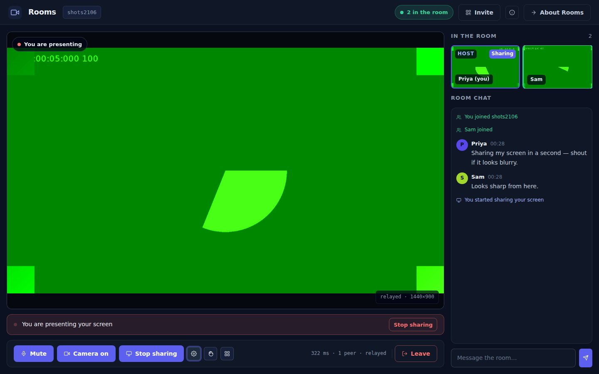
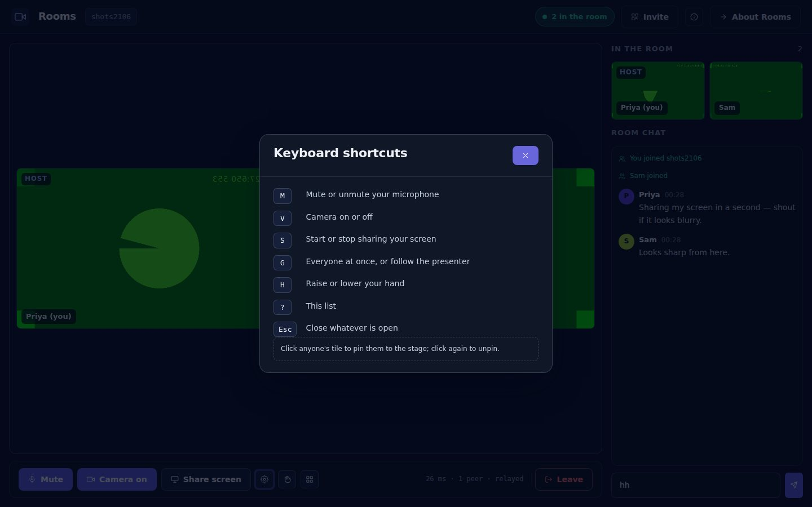

Alone in a room
The one useful thing to do next is fetch somebody, so that is what the stage offers — not a single lonely square of your own face.
Cameras, microphones and screens go straight from one browser to the other. The channel carries only the small facts a room needs — who is here, who is talking, who is presenting — which is why a room of four costs the same in messages as a room of two. And because the whole claim is "this went peer to peer", the control bar shows you the round-trip time and the route it actually took.
Nothing to install Nothing on until you say so No media server

In the app: Connect → Join with camera. The bottom-right readout is measured from the connection itself. How →
Arriving in a room transmits nothing — no camera, no microphone, not even a permission prompt. The mic button honestly reads Unmute before you have ever unmuted, because off is where it starts. The green room is where you find out what the room is about to see, while the room is already live behind it and you can read the chat.

Every stream is one direct connection per viewer, offered by the sender and answered by the receiver. Nothing about the picture goes through the channel — only the sentence that says which stream is a camera and which is a screen.

The one useful thing to do next is fetch somebody, so that is what the stage offers — not a single lonely square of your own face.

A pin outranks the presenter, because you chose it and the presenter did not. Click again to let the room go back to whatever it was doing.

The menu shows the camera it is about to pick and the level of the microphone it is listening to. Change either and the stream is re-acquired and re-offered to everyone automatically. Where the browser supports it, you can send the room's voices to a different speaker.
Whoever is speaking gets a green ring, read off the audio itself five times a second — so it follows the voice, not the button. And muted is muted: the ring never appears for somebody whose microphone is off, whatever the analyser last heard.
Sound is deliberately not tied to the picture. Voices play from their own element that exists for as long as the person does, so turning your camera off does not turn you off — which is the ordinary case in a call, not an edge one.
H puts your hand up. It rings your tile for everybody and lands once in the room log, rather than being a thing you have to say out loud over whoever is already talking.
Somebody who has just arrived and not yet said what they have switched on reads connecting… — not a mute icon that would be wrong for the first few seconds of every arrival.
An unanswered offer is re-sent, three times, six seconds apart. If it still will not connect, the room says so — on that person's tile and once out loud — instead of leaving you believing you are on camera to somebody who has been looking at your initials.
Share your screen and every stage in the room switches to it, with a red-dot tag naming the presenter and a corner badge reporting the route the pixels took and the resolution that actually arrived. On your own screen a bar stays put under the call for as long as you are sharing, with the stop button in it.

In the app: Share screen, or S. The bar under the stage follows the share around.
Reconciled against the channel roster every second and a half — because the join event does not reliably beat the roster, and a member list that is occasionally a person short is worse than none at all. What everyone has switched on is re-announced on a slow heartbeat, so a message that goes missing cannot leave a stale microphone icon on your screen for the rest of the call.
Stamped by whoever said them, so your reply does not jump above the thing you replied to — but a stranger's clock is trusted only to place a message in the recent past, never in the future.
Your own message appears the instant you send it, which is right — and wrong to leave alone when the send then fails. A failed one is marked not delivered · retry rather than sitting in your log looking delivered.
Joined, left, started sharing, raised a hand: quiet inline lines with their own icon, never fake chat from a person called System.
People and Chat become tabs, because a call whose member list has pushed the chat off the bottom of the screen has neither. Opening Chat gives the call some of its height back; every control in the bar is a 44-pixel target.

Every two and a half seconds Rooms reads the standard statistics report from each connection and puts three things in the bar: how many people you are connected to, the worst round-trip time of any of those links, and whether the media is genuinely going direct or is being carried by a TURN relay.
When a relay is carrying your call, the bar says relayed rather than claiming otherwise. Two people behind strict networks may need one; that is what a relay is for, and it is worth being honest about which of the two happened.
A dropped connection is not a departure, either: the status pill turns amber, the room retries up to eight times with backoff, and on the way back in it re-offers every stream you were sending.
Press ? in the room for this list. It used to live in the tooltips, which is to say nowhere.
What Rooms does not do. There is no recording, no background blur, no noise suppression, no reactions, and the host cannot mute anybody else — the crown is a label, not a power. Rooms hold eight people, because a mesh costs one upload per viewer and it is better to cap the room than to let it discover your uplink.
Share the room link and whoever opens it lands in the room with you — same name, same password, nothing installed. Free while the SDK is in beta.
Open Rooms